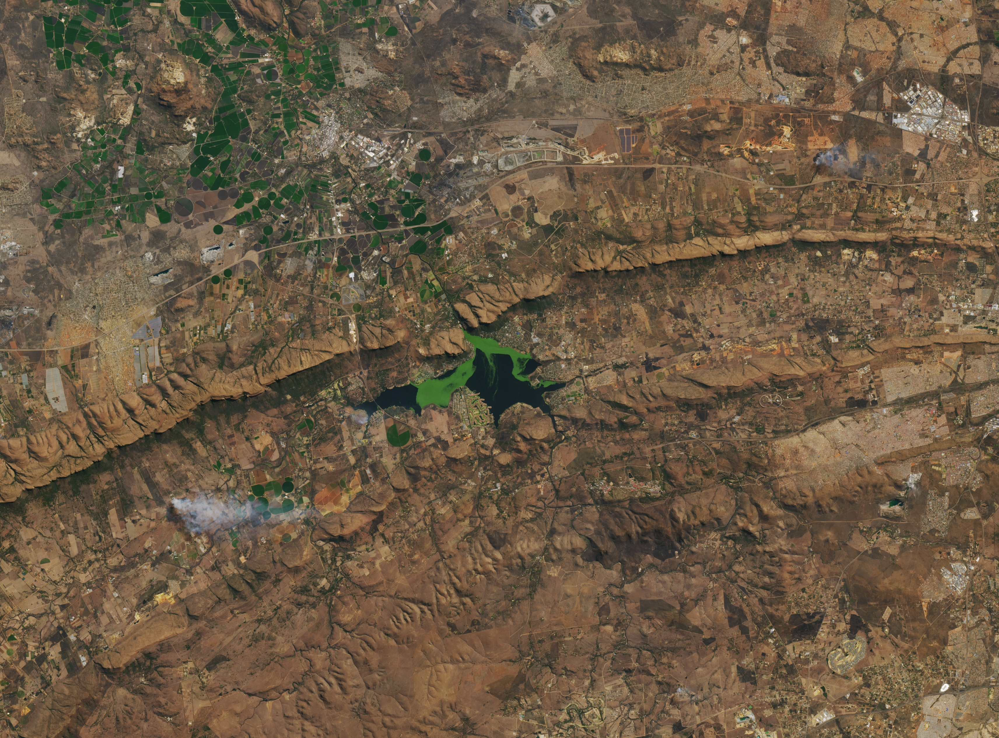

Collect
Bring together satellite imagery, environmental observations and regional data.
Medical Consortium of Africa
Satellite insight. Better health decisions.
Explore the connections between our environment and our health, with geospatial intelligence built for Africa.
Explore ward-level risk, environmental factors and regional patterns.
Open dashboardExplore environmental observations and the developing exposure framework.
Explore observationsExplore ward-level biosecurity indicators over any year, month or timeframe.
Open dashboardExplore illustrative risk forecasts and uncertainty across time horizons.
View forecastsFilter regional risk summaries and download data for closer analysis.
Browse reportsFrom satellite to health intelligence
Connecting satellite data, environmental observations and health analytics to support informed decisions across Africa.
Bring together satellite imagery, environmental observations and regional data.
Explore spatial patterns and the environmental factors associated with health risks.
Use accessible maps and reports to support research and public health planning.
Powered by satellite data
Explore the world through Earth observation.
Explore data resources